今年（2019年）の春、埼玉県立歴史と民俗の博物館にて開催された「
東国の地獄極楽」展。
中世から近世にかけての関東地方の浄土信仰の広がりを紹介する骨太で興味深い展示だったが、ハナシはその博物館のロビーから始まる。
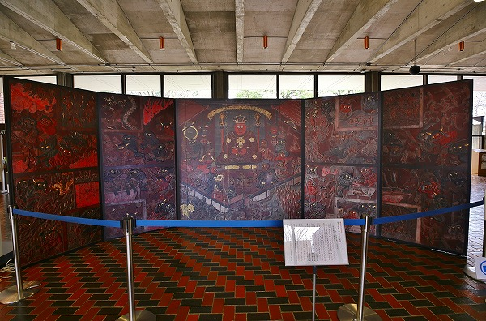
展覧会に併せてロビーに巨大な障壁画が鎮座していたのだ。
閻魔王宮と八大地獄図である。
うわあ、こんな凄い障壁画を床に直置きしちゃったよー！
…と思いつつ、近づくとコレは複製画だったのだ。
複製だけに撮影もＯＫ！遠慮なく激写させてもらいました。
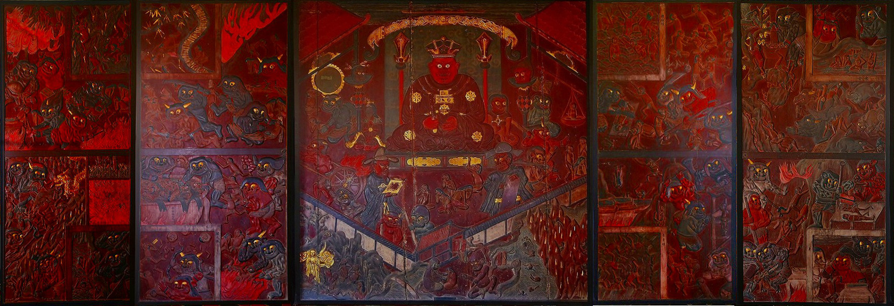
(画像は合成してあります）
それにしても奇妙な絵である。
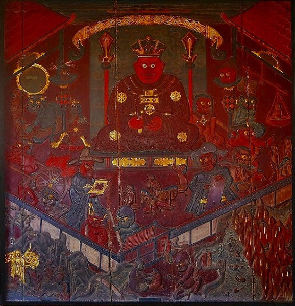
閻魔大王を中央に配し、左右に浄玻璃の鏡、業の秤、人頭杖といった生前の罪を判定する装置に加え手前には従者の司命と司録の姿。
いわば閻魔大王フルセットなのだが、その周辺にいる獄卒の
鬼の皆さんが妙にカワイイのだ。
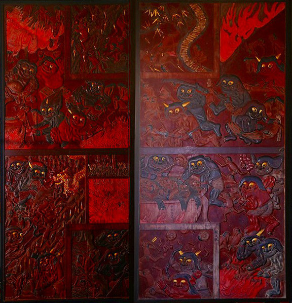
さらに正面から見て左サイドには様々な獄卒の皆さんが地獄の責め苦に精を出しているのだが、その表情が何ともキュート。
まるで森の妖精がチョットいたずらをしているかのような表情なのだ。人間を惨殺しているのに…
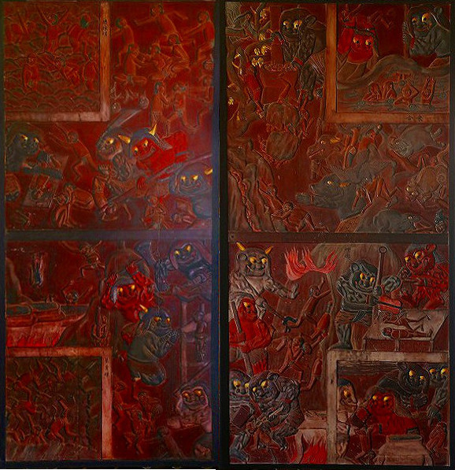
こちらは右サイド。
血と炎で真っ赤に染まった画面の中で鬼の眼と角だけがてらてらと金色に光っている。
不気味でもありキュートでもある。
そして責められている亡者は小さいし表情とかないし、完全に脇役扱いなのである。
キャプションを読むと、この障壁画、江戸時代に作られたもので、現物はなんとレリーフ状の半立体なのだという。
この展示はそのレリーフを印刷したモノなのだが、なるほど、確かに鬼の立体感が半端ないもんなあ。
しかもさらに驚くべきことに、会期中に所蔵先のお寺でお祭りが開かれていて、本物の地獄絵図が見られるというのだ！
おお、何たる僥倖！そりゃあ行くしかないでしょ！
…というわけでやって来ましたよー。春日部市の
圓福寺。
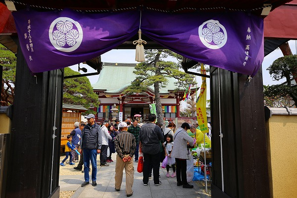
この圓福寺は浄土宗のお寺で、
呑龍上人が生まれた寺として知られている。
呑龍さまといえば子育ての神様と言われるが、実際には関東に広く浄土宗を広めた人物でもあった。
この日は年に一度の圓福寺の祭りで、大勢の人でごった返していた。
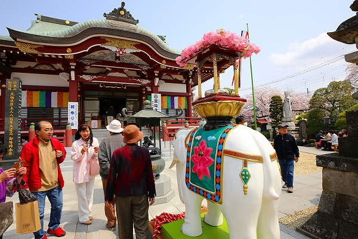
境内では地元の方々によるフリマや模擬店が並び、満開の桜とあいまって春らしい華やかな雰囲気。
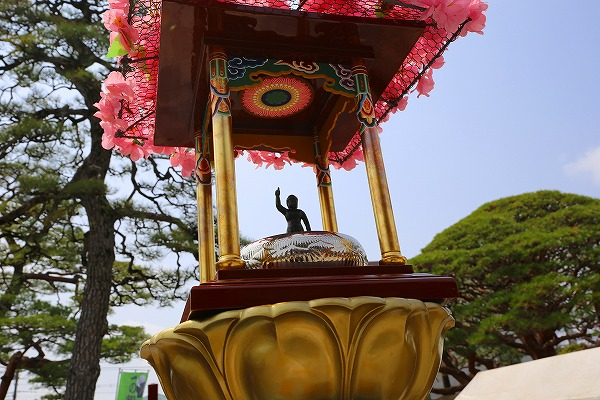
花祭りの時期なので象さんの上には天上天下唯我独尊像が飾られていた。
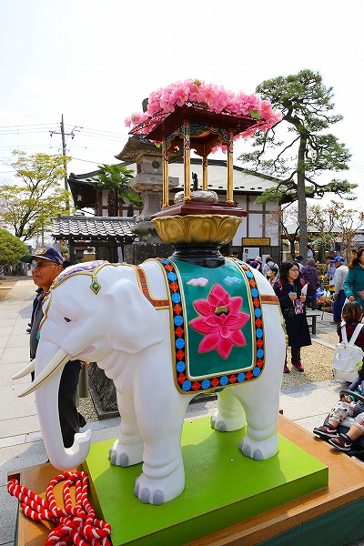
本堂前にも釈迦生誕像が。
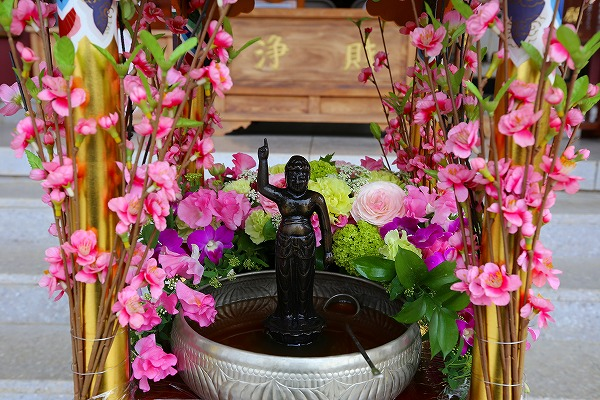
甘茶をたっぷりとかけましたよ。
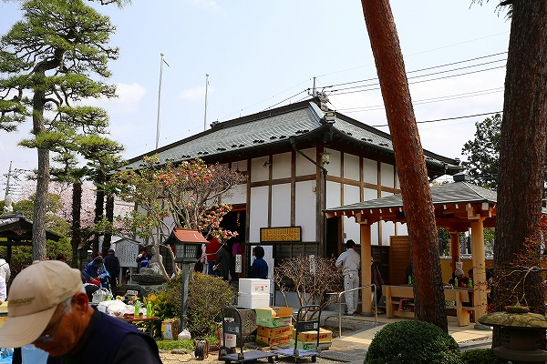
そしてこの祭りの最大の見どころが普段は非公開の
曼陀羅堂の御開帳なのだ。
この中に先の地獄絵図があるのだ！
もう大興奮ですよ！
…残念ながら内部は撮影禁止なので
お寺のサイトを参考にしつつご覧頂けたら、と。
年に一度の公開ということで大勢の人が堂内で寺宝を堪能している。
因みに入場は有料だが、外からも見ることは出来る。
しかし絶対中に入った方が理由があるのだが、それは後程。
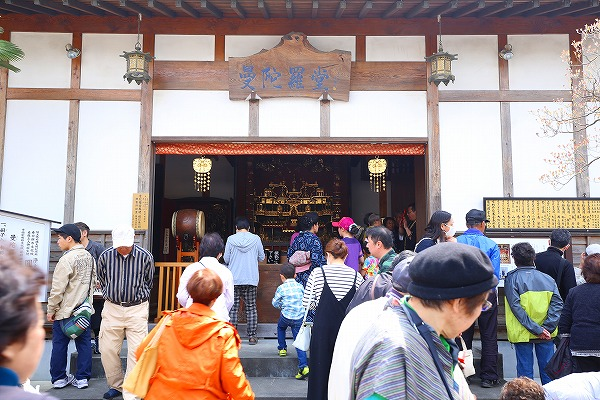
曼陀羅堂の内部には6つの寺宝がある。
入り口から近い順に
1.木彫立体釈迦涅槃像
2.阿弥陀三尊来迎仏
3.木彫立体當麻曼陀羅
4.二十五菩薩来迎の像
5.木彫閻魔王宮と八大地獄図
6.法然上人一代記
の6つ。
順に説明していくと…
1.木彫立体釈迦涅槃像
幅2.5×高さ3メートルほどの大きな厨子に納められた文字通り立体の釈迦涅槃図である。
元禄期に作られたもので、作者はこの寺の住職をしていた
光世上人。
横たわる釈迦の周りにはひな壇状に配された釈迦弟子、さらにその下には動物までも伏して釈迦の入滅を悲しんでいる。
そんなシーンが
立体ジオラマ仕立てで作られているのだ。
特に動物の描写が興味深く、当時日本に居なかったであろう動物もちらほら。
書物で見聞きした知識を大胆に立体化したのだろうか。中々の野心作である。
光世上人は制作するにあたって江戸深川に居を移したというから、もしかしたら江戸の見世物で見たのかもしれない。
涅槃図を立体化したのも凄いが、さらに上空の雲まで作ったのが凄い。
しかも雲は上から吊るすのではなく、下から柱で支えてあるのが面白かった！
2.阿弥陀三尊来迎仏
左右に観音菩薩、勢至菩薩を従えた阿弥陀仏が来迎している様子を示している。
左右の脇侍はこれまた光世上人の手によるもの。
先に行ってしまうが、この曼陀羅堂の寺宝はこの中央の阿弥陀像以外はぜ〜んぶ光世上人の作である。
いわば曼陀羅堂というより、
光世上人ギャラリーと言ったほうが正確なのだ。
3.木彫立体當麻曼陀羅
この曼陀羅堂の最大のハイライトがこの立体當麻曼陀羅だろう。
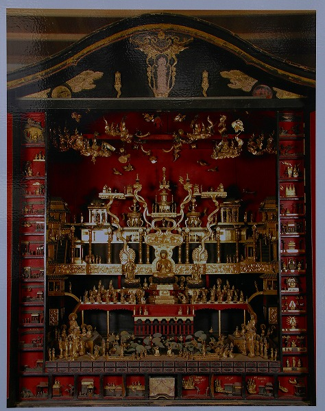
（※内部は撮影禁止だったので、外の看板にあった写真を撮影してみました）
元禄6〜10年に制作された立体曼陀羅。
奈良當麻寺の當麻曼荼羅図を立体的に再現したものなのである。
當麻曼荼羅の画像と見比べていただきたいのだが、図中に描かれている登場人物（仏）や建物、法具などが細かく再現されている。
さらに画面の左右下にある序分義、十三観、九品図の小さなマス目に描かれた細かい絵まで立体で表現されている。
何なんだろう？この光世上人の
何でもかんでも3D化しちゃうパワーって。
4.二十五菩薩来迎の像
立体曼陀羅の隣にある厨子には二十五菩薩来迎群像がある。
光世上人初期の作ということで、像の完成度やジオラマの立体感がややおとなしめの印象を受ける。
それでも初期から立体的な群像表現に心惹かれている様が伺える。
5.木彫閻魔王宮と八大地獄図
あまりにも他のジオラマ世界が濃密だったので、すっかり印象が薄くなってしまったが、コレがお目当てだったんでした。
当たり前だが、博物館で見たレプリカよりも現物の方が立体感があり、迫力もあった。
そしてやっぱり
鬼が可愛い！
元禄13年から2年かかったという力作。
さして広くない堂内においてその存在感はピカイチだった。
それにしても、何でも3D化しちゃう「ジオラマ仏師」光世上人が何故レリーフという半立体で地獄を表現したのだろう？
これまでの作品を制作順に追うと二十五菩薩来迎→釈迦涅槃と當麻曼荼羅→八大地獄という並びになる。
取り上げられている題材や制作時期からして、当然これらの作品は連作と考えてよかろう。
であれば当然、八大地獄も立体で！となりそうなものだが…新たな表現の領域を模索したのかもしれない。
そして最後に見逃してならないのが
6.法然上人一代記
である。
これは法然上人の一生をレリーフで表したもの。
旧本堂の内陣欄間にあったものを移したものだそう。
曼陀羅堂正面の開口部の真上の壁面に掲げられているので、これだけは外から見ることが出来ないのだ。
この堂内でこのレリーフ群だけが市文化財に指定されていない。
コマ割りされた12枚のレリーフは何となく半立体のマンガのようにも見えてくる。
実際、マンガっぽいテイストのレリーフなのだ。
以上、曼陀羅堂からお送りしました。画像無くてすまんのう。
本堂前では祭りの一環として秋田県の西馬音内盆踊りが奉納されていた。
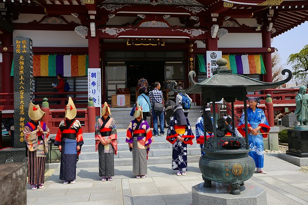
西馬音内盆踊りは日本三大盆踊りとして有名だ。
一度見てみたかったが、中々見に行けない踊りだったので、こんなところで見られてラッキー！
というわけで大勢のお客さんに混じって見物させてもらう。
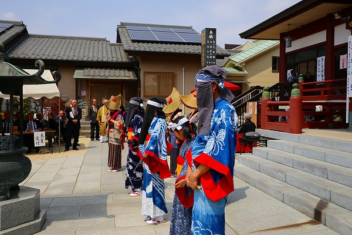
踊り手は笠を被った人と顔に黒い布を下げた人がいる。
これは死者を表しているとの事。成程だから顔を見せないのか。
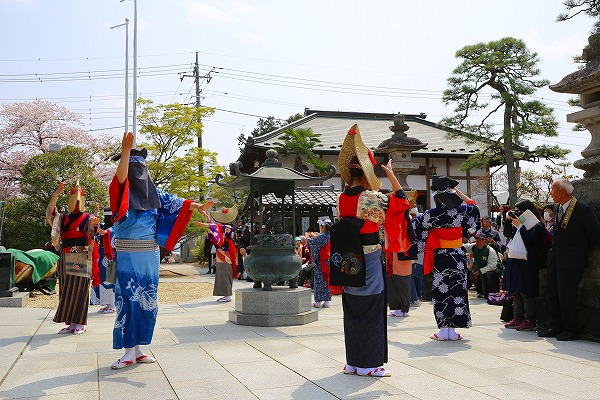
すこし物悲しい調子の曲に合わせて踊る。
端縫い衣装という独特の着物も印象的だ。
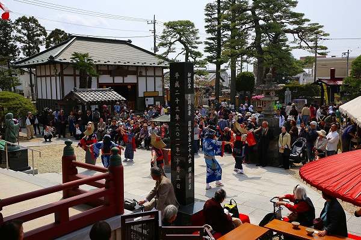
…地獄の障壁画を見に来たつもりが思いがけず色々楽しいものと遭遇出来て、凄くお得感のある一日だった。
善き哉、善き哉。